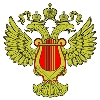
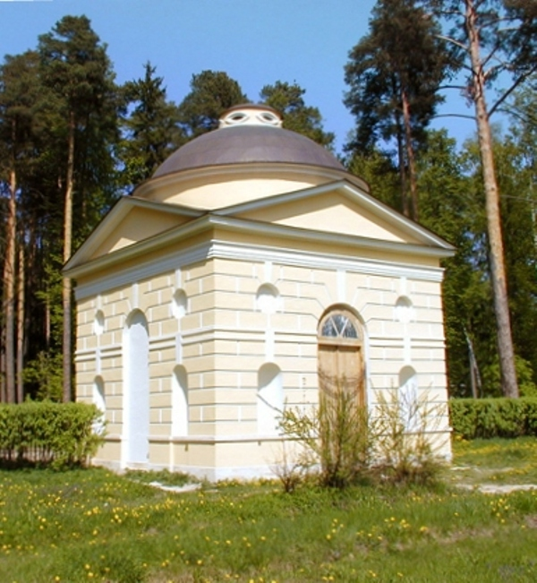

|  | Министерство культуры Российской Федерации Портал Культура.рф Проект «Образы России» |
The memorial estate Arkhangelskoye
Tea house

Complex of two houses and a “Garden” was built when prince N. Golitsin ran the estate. “Caprice” – is a small one-floor living house inspirited by regular garden monbijou-pavilions traditional for the XVIII century.
The library is a graceful garden building, constructed by I. Petondi, the Italian architect. After fire of 1829, which destroyed wooden wings of the library, central stone pavilion with small stepped dome preserved, it had wonderful interior decoration with white columns and fretwork on the blue wall background. As time went on the owners started to use it as a “Tea house”.